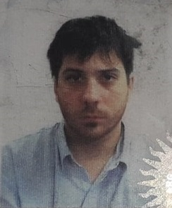

2005-2007 Titulacion: Polimodal en ciencias naturales con orientacion a salud. instituto que otorga el titulo: Escuela Normal Superior General Manuel Belgrano. 2008-2010 Licenciatura en sistemas de informacion: Estudio universitario incompleto. Universidad Nacional de Santiago del Estero.
Experiencia Laboral Cargo: Auxiliar de Cobranzas, Aguas de Santiago S.A.Gestión de Avisos de deuda, Gestión de planes de pago (control, cálculo de importes, sellado, y anulación), Gestión Especial: Manejo de Clientes Morosos Crónicos, Control de devolución de los correos, Gestión Extrajudicial. Almacenamiento de información. Aplicación de herramientas especiales de recupero de deuda. Manejo de operarios de servicios tercerizados. Digitalizacion de archivos.
HabilidadesMicrosoft Office, Windows 98/98SE/ME/XP/Vista/7/8, resolucion de problemas, LibreOffice, OCR . Autocad Basico. Gestion de bases de datos: Access. Photoshop, Photoscape, Gimp, Pinacle Studio, Sony Vegas Pro, Sound Forge y demas herramientas de edicion de Foto, Video y Audio. Diseño, maquetacion y administracion de sitios web. Gestión y administración de sitios web. Gestores de contenidos: Joomla!, Drupal, Wordpress. Administración y soporte de plataformas e-learning Moodle, Claroline. Diseño de plantillas web con Artisteer 4. Diseño y programacion de videojuegos y animaciones 3D con Unity 5.
 HobbiesLectura, Juegos de rol,
Me encuentro realizando este curso para poder mejorar mi calidad de vida y trabajar haciendo algo que me gusta. Planeo buscar trabajo como programador tan pronto como termine la carrera. Mi principal meta es poder irme del pais y trabajar en el extranjero.